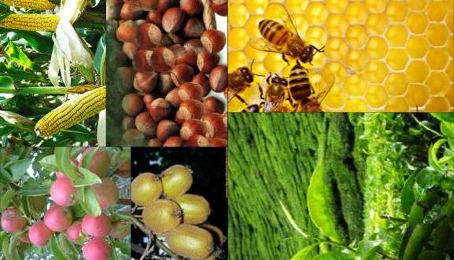
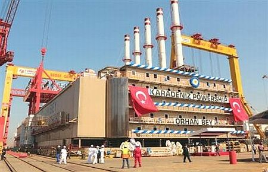

karadeniz bölgesi
tarým
Karadeniz Bölgesi'nde Yetiþen Tarým Ürünleri
Her mevsim yaðýþ görülmesi, yaz kuraklýðý isteyen ( buðday, arpa, yulaf, çavdar, mercimek, pamuk) ürünlerin yetiþmesini önlemiþtir. Kýyý kesimde tahýlýn yerini mýsýr almýþtýr.
Kýþ mevsiminde Doðu Karadeniz'de kýþ ýlýklýðý fýndýk, çay, turunçgil, zeytin gibi ürünlerin yetiþmesini kolaylaþtýrmýþtýr. Ýç bölgelerde yaðýþ azlýðý orman örtüsünün azlýðýna, tahýl ve þekerpancarý gibi ürünlerin öne çýkmasýna yol açar. Bölgede çalýþan nüfusun %70'i geçimini tarýmdan saðlamaktadýr. En verimli tarým arazileri kuzeye bakan yamaçlarda görülür.
Fýndýk: Trabzon, Giresun ve Ordu baþlýca üretim alanlarýdýr. Türkiye toplam üretiminin % 85'i bölgeden karþýlanýr.
Çay: Giresun'dan Gürcistan'a kadar olan kýyý þeridinde yetiþtirilir. Rize çevresinde yoðunlaþýr. Türkiye toplam çay üretiminin %100'ü bu bölgeden karþýlanýr. Tabii ekim alaný en dar olan ürünlerimizdendir.
Tütün: Daha çok Orta Karadeniz Bölümü'nde (Samsun, Amasya ve Tokat çevresi) yetiþtirilir. Ayrýca Batý Karadeniz'de Düzce dolaylarýnda da üretimi yapýlýr. Türkiye toplam tütün üretiminin %13'ü bölgeden karþýlanýr.
Mýsýr : Bütün kýyý boyunca yetiþtirilir.
Elma: Bölgede Amasya baþta olmak üzere Kastamonu ve Tokat çevresinde yetiþtirilir.
Þekerpancarý: Amasya, Tokat, Kastamonu çevresinde tarýmý yapýlmaktadýr.
Keten-kenevir: Kastamonu baþta olmak üzere Sinop, Zonguldak çevresinde tarýmý geliþmiþtir.
Soya Fasulyesi: Ordu- Giresun çevresinde tarýmý yapýlmaktadýr.
Zeytin: Soðuktan korunmuþ Çoruh vadi oluðunda (Artvin -Yusufeli) tarýmý yapýlýr.
Turunçgiller: Kýþ ýlýklýðý sebebiyle Rize çevresinde tarýmý yapýlýr.
Kivi: Son yýllarda Rize ve Trabzon çevresinde tarýmý yapýlmaya baþlamýþtýr.
sanayi
Karadeniz Bölgesinin Sanayisi, Karadeniz Bölgesinin sanayi özellikleri
Karadeniz Bölgesindeki Sanayi Faaliyetleri Nelerdir
Demir - çelik Endüstrisi : Divriði (Sivas)'den çýkarýlan demir cevheri, Samsun limaný vasýtasýyla taþýnarak Karabük ve Ereðli'deki fabrikalarda iþlenir.
Bakýr Endüstrisi : Murgul (Artvin)'daki bakýr cevheri, bu yörede kurulan bakýr fabrikasýnda iþlenir. Küre (Kastamonu)'de çýkarýlan bakýrlar ise Samsun bakýr iþletmelerinde iþlenir ( Sebebi Samsun'un iç kesimlere olan baðlantýsýnýn kolay saðlanmasýdýr).
Þeker Endüstrisi : Karadeniz Bölgesi'nde üretilen þekerpancarý Turhal (Tokat), Suluova (Amasya) ve Kastamonu þeker fabrikalarýnda iþlenir.
Tütün Endüstrisi : Karadeniz'in, özellikle Orta Karadeniz Bölümü'nün tütünleri, Samsun ve Tokat'taki sigara fabrikalarýnda iþlenir.
Fýndýk Ýþleme Endüstrisi : Giresun çevresinde geliþmiþtir.
Çay Endüstrisi : Rize ve yöresinde toplanmýþtýr.
Kaðýt Endüstrisi : Aksu ( Giresun), Çaycuma (Zonguldak) ve Taþköprü (Kastamonu) da bulunmaktadýr.
Kereste-tomruk Endüstrisi: En fazla Batý Karadeniz Bölümünde geliþmiþtir (Sinop, Bartýn, Zonguldak, Bolu, Düzce ve Kastamonu çevresinde). Bölge, maden kömürü, bakýr, orman ve deniz ürünleri, çay, fýndýk, tütün, demir - çelik, keten - kenevir, pirinç, soya fasulyesi bakýmýndan ülke ekonomisine önemli bir katký saðlar. Yer þekillerinin ulaþýmý engellemesi, doðal limanlardan yoksun olmasý, ana ulaþým yollarýna sapa kalmasý. Karadeniz Bölgesi'nin geliþimini yavaþlatmýþtýr.

